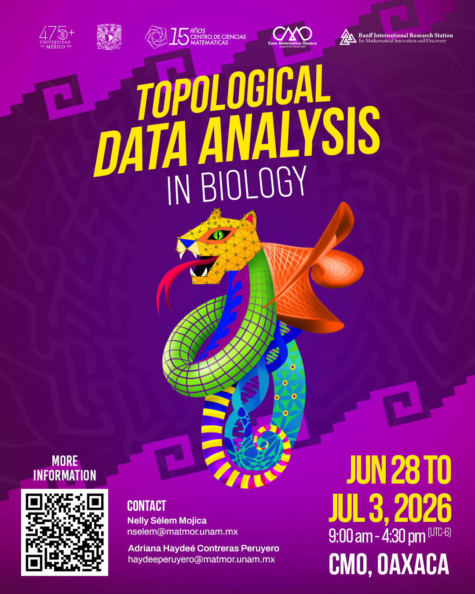

Análisis Topológico de Datos para la Caracterización de Patrones Celulares

1 Bienvenidos
Este sitio reúne el material de la sesión “Análisis topológico de datos para la caracterización de patrones celulares”, impartida dentro del workshop:
1.1 Topological Data Analysis in Biology
29 de junio al 3 de julio de 2026
Casa Matemática Oaxaca
Instructors
- Adriana Haydeé Contreras Peruyero
- Shaday Guerrero Flores
- Yesenia Villicaña Molina
- Nelly Sélem Mojica
Helpers
- Luis Raúl Figueroa Martínez
- Eugenio Martín Azpeitia
2 Sesión del curso
2.1 Análisis topológico de datos para la caracterización de patrones celulares
Miércoles 1 de julio de 2026
Instructores de la sesión
- A. Haydeé Contreras Peruyero
- Eugenio Martín Azpeitia
- Luis Raúl Figueroa
Programa
| Hora | Actividad |
|---|---|
| 09:30 – 10:20 | Charla: Análisis topológico de datos del microambiente tumoral de pacientes con anemia de Fanconi |
| 10:30 – 11:30 | TDA in Images – Práctica 1 |
| 11:30 – 11:45 | Receso |
| 11:45 – 12:50 | TDA in Images – Práctica 2 |
| 13:00 – 14:00 | Espacio libre para trabajo individual |
3 Objetivos
Durante esta sesión exploraremos cómo las herramientas de Análisis Topológico de Datos (TDA) pueden utilizarse para estudiar patrones espaciales presentes en tejidos biológicos.
Particularmente abordaremos:
- Representación de tejidos como nubes de puntos.
- Construcción de complejos de Vietoris–Rips.
- Homología persistente.
- Diagramas de persistencia.
- Distancias de Wasserstein.
- Agrupamiento jerárquico.
- Aplicaciones a imágenes biológicas y microambiente tumoral.